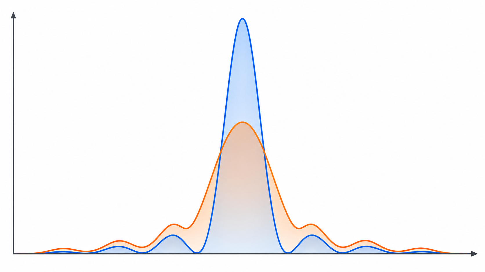
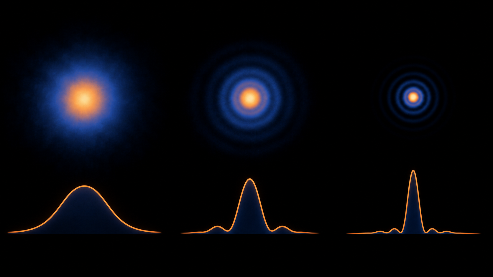

Livello intuitivo: Confrontiamo l’altezza della macchia luminosa reale con quella ideale: un picco più basso indica che parte della luce si è distribuita altrove.
Per essere maggiormente rigorosi: Il confronto di Strehl richiede la stessa energia totale, apertura e lunghezza d’onda. Non è una percentuale di vista e non riassume da solo tutta la qualità dell’immagine.
Un confronto tra sistema reale e ideale
Il rapporto di Strehl confronta il picco della PSF di un sistema reale con quello di un sistema ideale limitato dalla diffrazione, usando la stessa apertura, la stessa lunghezza d’onda e la stessa energia totale:
Cosa Vuol Dire?
Livello intuitivo: Strehl è il picco dell’immagine reale diviso il picco ideale di riferimento.
significa picco pari all’80% del riferimento, non 80% di visione né 20% di luce persa.
Per essere maggiormente rigorosi: PSF normalizzate alla stessa energia totale e medesima apertura e . Convenzionalmente si usa per una buona qualità vicina al limite diffrattivo.
Le PSF devono essere normalizzate in modo coerente. Senza questa condizione, il rapporto può confondere perdite di trasmissione e ridistribuzione dell’energia dovuta alle aberrazioni.

Interpretazione
Un valore vicino a 1 indica che il picco reale si avvicina a quello ideale. Le aberrazioni spostano energia dal massimo centrale verso le regioni circostanti e riducono .
Il valore viene spesso usato come criterio pratico per definire un sistema “diffraction limited”, ma non costituisce una frontiera universale. Un singolo numero non descrive la forma completa della PSF, il campo visivo, la banda spettrale o il trasferimento del contrasto.

Collegamento con l’errore del fronte d’onda
Per aberrazioni piccole, indicando con l’errore RMS del fronte d’onda, l’approssimazione di Maréchal è:
Cosa Vuol Dire?
Livello intuitivo: Il rapporto di Strehl è circa un’esponenziale negativa del quadrato dell’errore RMS di fronte d’onda rapportato alla lunghezza d’onda.
A fissa, aumentando il picco diminuisce. Lo stesso errore fisico pesa di più a lunghezze d’onda più corte.
Per essere maggiormente rigorosi: Approssimazione di Maréchal per piccole aberrazioni; e nella stessa unità. Non applicare automaticamente a errori grandi.
Per essere maggiormente rigorosi: è la radice della media del quadrato dell’errore di cammino ottico sulla pupilla, rispetto al fronte ideale scelto. Ha unità di lunghezza: non è il solo valor medio del quadrato. Nel caso di pupilla uniformemente illuminata, la media è areale. Si sottrae il piston, che modifica solo la fase globale. Se confrontiamo i massimi dopo aver ricentrato la PSF, rimuoviamo anche tip e tilt. Il defocus si rimuove solo se dichiariamo un confronto al miglior fuoco; altrimenti resta nell’errore. Il riferimento e i termini rimossi devono essere gli stessi nella stima di e nel confronto delle PSF.
Uso pratico
Il rapporto di Strehl è utile per confrontare configurazioni dello stesso sistema o verificare una specifica. Va affiancato a PSF, MTF e condizioni di misura. Due sistemi con lo stesso Strehl possono distribuire diversamente l’energia e produrre immagini percepite in modo differente.